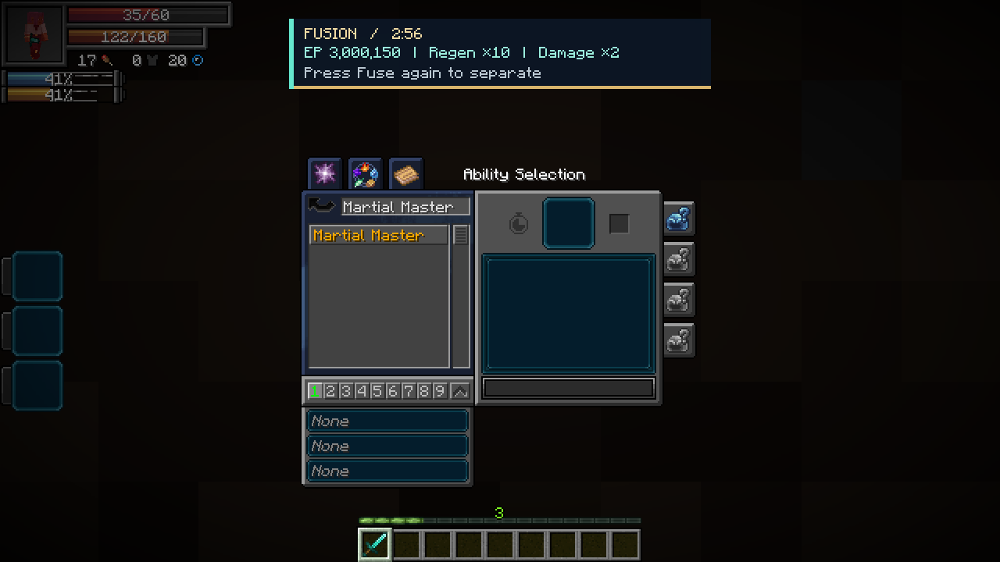
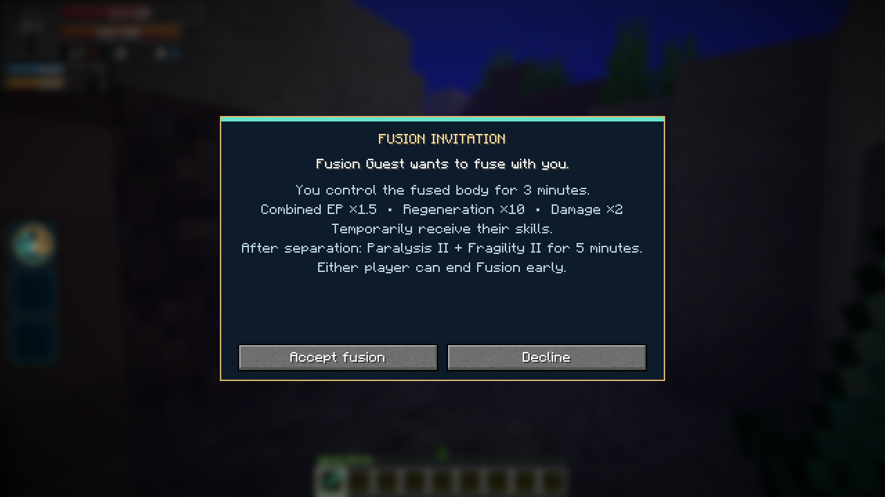
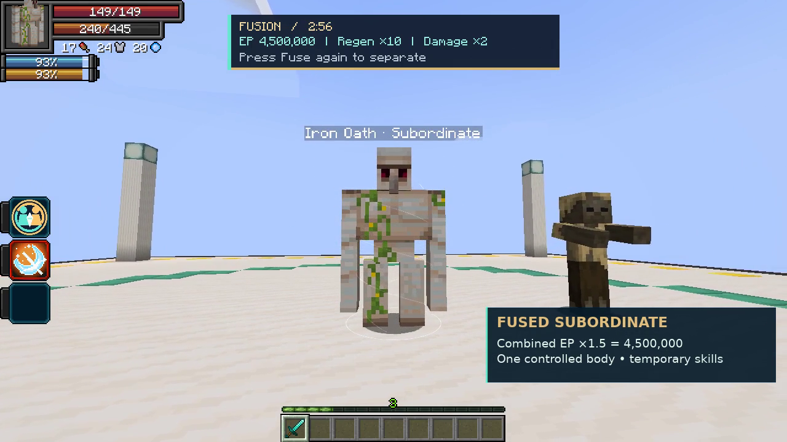

On this page
Fuse · Active, Press
Aim at your subordinate or another player. Players must accept the invitation. You control a subordinate’s fused form; a receiving player controls their own body.
| Fused benefit | Effect |
|---|---|
| EP | (Your actual max EP + target’s actual max EP) × 1.5 |
| HP and SHP | Add both participants’ maximum and remaining HP/SHP; no 1.5× health multiplier |
| Resource split | Combined aura and magicule capacities, each multiplied by 1.5 |
| Regeneration | 10× aura and magicule regeneration, including normal biome bonuses |
| Damage | 2× final outgoing damage, retaining Physical, magical or Spiritual type |
| Skills | Temporary skill sharing; existing learned skills are retained |
Press Fuse again or choose Pause → Separate Fusion to end early. The absorbed caster can also sneak to separate. Fusion cannot be nested.
Borrowed skills in Tensura’s menu
Open Tensura’s Ability Selection menu. Borrowed skills appear in their normal categories, such as Skills → Unique, Magic, or Battlewills. Search f:temporary to find temporary entries. Select and slot active abilities normally; passives follow their normal toggle/slot rules. Borrowed entries disappear after separation, and any previous learning entry is restored.

Separation
Both participants receive Paralysis II and Fragility II for 5 minutes, including after early separation. Original forms, EP and permanent skills return. Remaining HP, SHP, aura and magicules are divided in proportion to the original maximum capacities; Fusion does not provide a free refill. Borrowed skill storage and cooldowns return to their owner.
Death, disconnect, dimension changes and server shutdown end Fusion. Normal skill restrictions still apply.
Obtaining
Can roll as a normal reincarnation Unique. Excluded from Fettered Human’s starting pool because it borrows target skills.
Player invitation

In-game preview
